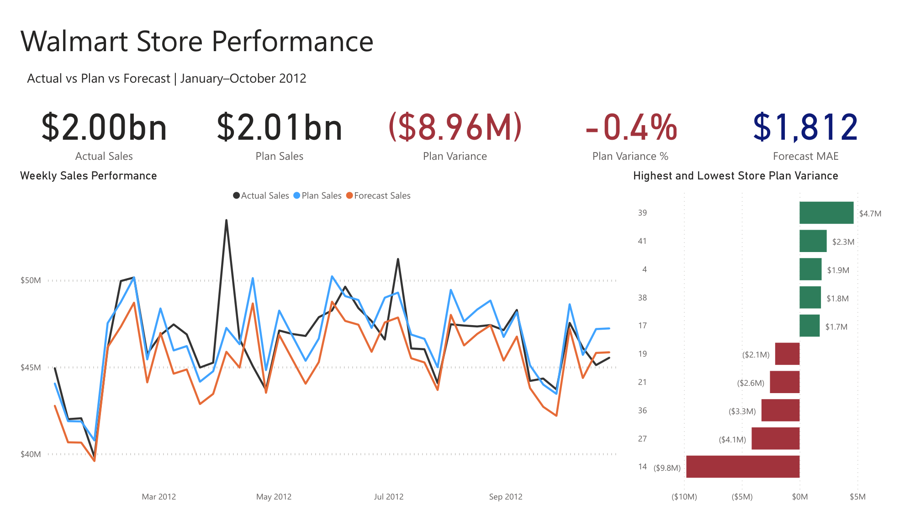

Data & BI Projects

U.S. Import Duty Exposure Dashboard
Power BI dashboard measuring tariff exposure across 2025 machinery and electronics imports using official USITC DataWeb data.
Nashville Housing Data Cleaning
SQL Server project standardizing dates, splitting addresses, filling missing values, normalizing categories, and identifying duplicates.
View Code
COVID-19 Data Exploration
SQL Server analysis of global cases, deaths, population, and vaccinations, with results visualized in Tableau.
Basketball Analytics

ATO Coaches Dashboard
Interactive dashboard ranking NBA coaches by after-timeout TS% and eFG% lift using NBA API play-by-play data.
View Dashboard
Gravity in the NBA
Interactive dashboard estimating how players affect teammate shooting using NBA API play-by-play and rotation data, on/off splits, and adjusted WOWY metrics.
View Dashboard
Free Throw Change into the Playoffs
Interactive dashboard using Basketball Reference data to compare regular-season and playoff free-throw volume and rate across players, teams, and title runs.
View Dashboard
Easiest and Hardest NBA Titles
Interactive dashboard ranking NBA championship paths using playoff opponent availability and season-long injury impact among contenders.
View DashboardBasketball Shooting-Streak Analysis
Python project scraping Stathead player-game data, cleaning it in Excel, and visualizing shooting consistency in Tableau.
Automation & Browser Tools
Built with ChatGPT and Claude for rapid prototyping, debugging, testing, and iteration.
Job Checkmark
Chrome extension for tracking applications on LinkedIn and Indeed, surfacing salaries, and filtering listings by pay and location.
View Extension


Steam Game Finder
Chrome extension that scans Steam libraries, recommends games, and supports search, sorting, filters, and previews.
View ExtensionMyWorkdayJobs Application Automation
Browser automation for MyWorkdayJobs that signs in, uploads a resume, and answers recurring application questions.
View Demo

Left Right Audio Splitter
Chrome extension with 200+ Chrome Web Store users that routes tab audio left, right, or both, with per-tab settings and mono downmix.
View Extension